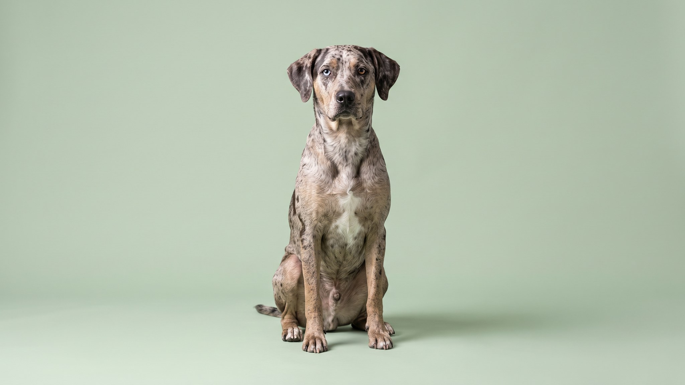

Леопардовая собака Катахула (Catahoula Leopard Dog) выглядит как картинка из справочника по аномалиям: мраморный окрас, разноцветные или голубые глаза, перепончатые лапы. За этой внешностью скрыта охотничья и пастушья машина из болот Луизианы, выведенная для работы в сложных условиях. Без ежедневной физической и умственной нагрузки порода превращается в разрушительную силу. Разбираем, кому эта собака подходит, а кому стоит выбрать другую породу.
🐾 У вас катахула?
AnimaLife соберёт уход под породу: к каким болезням есть склонность, что проверять по возрасту, чем кормить и когда пора к врачу. Бесплатно, прямо в мессенджере.
Собрать план ухода → Собрать в MAX →
У вас iPhone? AnimaLife есть в App Store
Катахула родом из штата Луизиана, получила официальный статус собаки штата в 1979 году. Предки породы: собаки коренных народов Северной Америки и испанские охотничьи псы, завезённые конкистадорами. Отсюда рабочие качества: выносливость на болотистой местности, умение самостоятельно загонять кабанов и управлять скотом без постоянных команд хозяина.
Катахула работала без постоянного надзора человека, поэтому самостоятельность у неё в крови. Это значит: собака принимает решения сама, если не получает от хозяина чёткого руководства. С незнакомыми людьми держится настороженно, с чужими животными может быть агрессивна, особенно если не прошла раннюю социализацию.
Минимум 2 часа интенсивной физической активности в день. Это не прогулка на поводке по тротуару, а бег, аджилити, работа с запахом, плавание или реальная пастушья задача. Катахула хорошо показывает себя в охоте, собаках-партнёрах по байкджорингу и поисково-спасательных командах. Без задачи собака разрушает мебель, копает ямы, воет.
Порода требует опытного владельца, который умеет работать с доминантными собаками и не отступает при первом испытании воли. Начинающий хозяин рискует получить животное, которое управляет им, а не наоборот. Также катахула плохо уживается с мелкими домашними животными при отсутствии ранней социализации.
Материал носит информационный характер и не заменяет очную консультацию ветеринара.
🐾 Ваш питомец — катахула?
Заведите профиль в AnimaLife: приложение запомнит породу, возраст и вес и будет подсказывать по уходу именно для неё. Вопросы AI-ветеринару — круглосуточно и бесплатно.
Завести профиль → Завести в MAX →
У вас iPhone? AnimaLife есть в App Store
🐾 Понравился разбор?
Подпишитесь на канал — каждый день разбираем по одному тревожному симптому у кошек и собак: что в пределах нормы, а когда пора к врачу. Подпишитесь, чтобы не пропустить разбор, который может спасти здоровье вашего питомца.